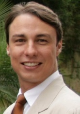

Para la implementación de técnicas y herramientas de gerencia de proyectos se hacen indispensables las aplicaciones informáticas para poder gestionar la información adecuadamente y así lograr la eficacia en todos los procesos necesarios para alcanzar los objetivos de los proyectos de construcción.
Expositor: 
German Torrealba
Ing Civil (UCAB, VE 2001), con Maestría en Dirección de Empresas Constructoras e Inmobiliarias (MDI, Univ. Politécnica de Madrid 2007), PMP (2010).
Contractor Mgr de la Univ. Santa María Barinas (VE 2003-2007). Gerente de Proyectos Internacionales de Grupo IMALCA (PA-BOG 2007 al presente).
Proyectos recientes: Mystic Blue y Res. Del Sol (Panamá), Infiniti (Bogotá). Formulación y Evaluación de Proyectos en VE – PA – COL. Inspecciones y acompañamiento de obras subrogadas de Nacional de Seguros con diferentes entes del estado como cadena de Frío (Mercado Chitré), Meduca (IPT Veraguas), MIVIOT (Techos Esperanza Arraiján).
Profesor en pregrado de Ing. Civil en “Ingeniería Económica” (USM 2005) y “Ger. de Proyectos de Construcción” (UCAB 2007). Creador y profesor del Diplomado de “Ger. de Proy de Construcción Inmobiliaria” (Univ. Louisville PA, 2010 al presente) Coordinador de la 1era Ed. (2014-2015) y profesor de la Maestría en Dirección de Proy de Construcción MeDIP (UPM-QLU PA, 2014 al presente).